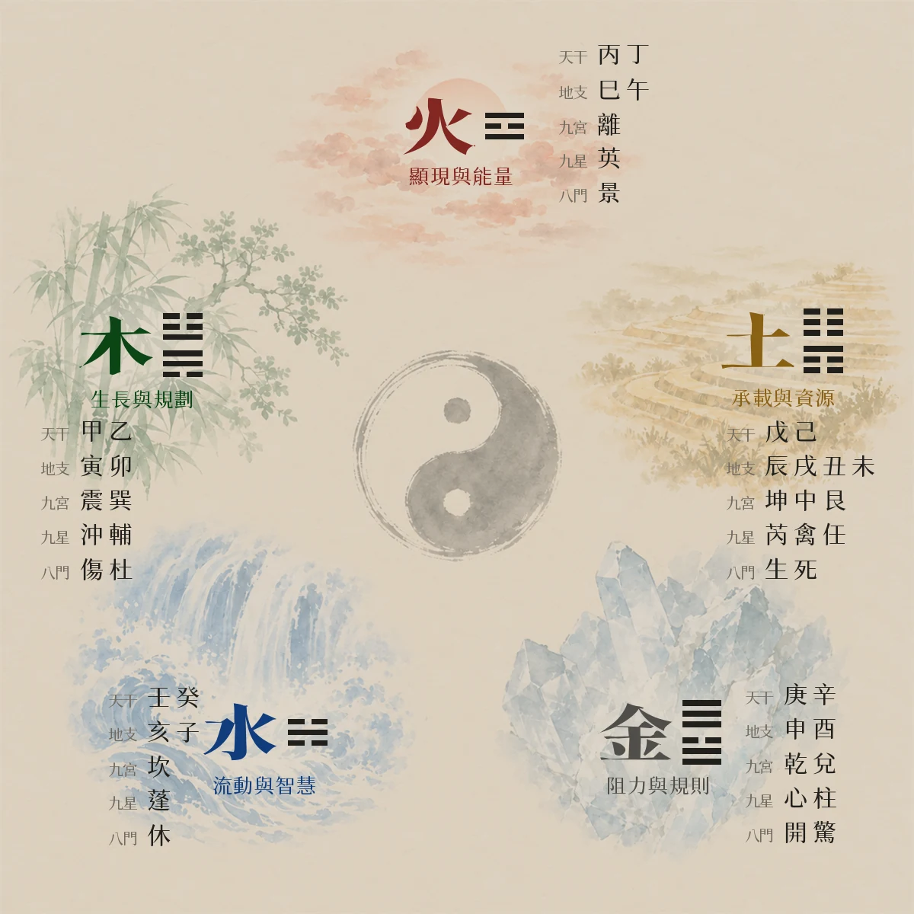
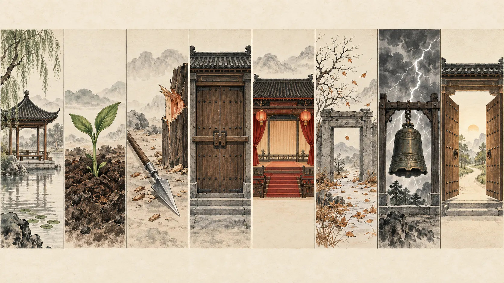
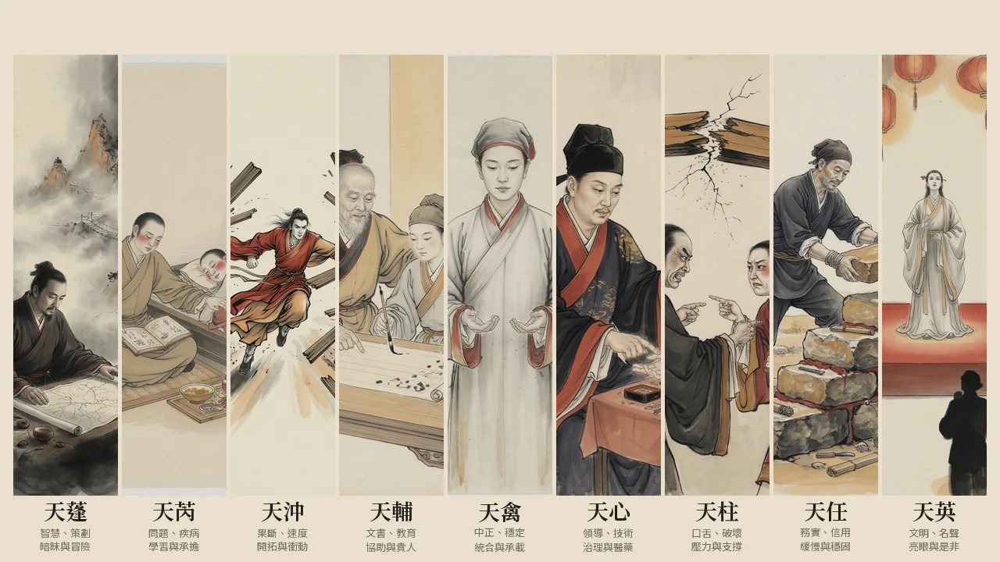
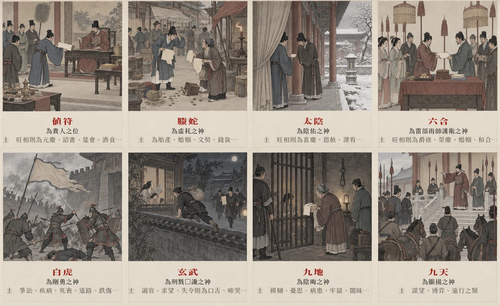

基礎語言
五行干支理解生剋、十天干與十二地支，看到符號能立刻辨認屬性。
不要從吉凶口訣開始。先知道每一層在回答什麼，再慢慢增加細節。
本節是本頁的學習順序安排，不是典籍分類。
本站的類象、格局與取用一律引《奇門遁甲統宗》《遁甲演義》《御定奇門遁甲寶鑒》《煙波釣叟歌》原文，每條標明出處；沒有出處的教學整理會另外標示，查不到的直接寫「查無出處」。
理解生剋、十天干與十二地支，看到符號能立刻辨認屬性。
熟記宫位、方向與五行。九宫是後續所有判斷的座標。
八門看行動，九星看環境，八神看隱微因素，奇儀看具體關係。
先取用神，再看落宫、組合、旺衰和彼此生剋，最後才下結論。
先看每一行管什麼、有哪些成員，再記住固定的生剋順序。
本節是五行通則的整理，非奇門典籍專條。與奇門直接相關的旺相休囚廢見第玖節，各有出處。

生不一定好、剋不一定壞，差别在於誰是「我」。
讀盤時先把用神的五行定爲我，其餘四種關係就自動定位。比如問錢財，生門屬土是我，木來剋土是阻力，火來生土是助力。
| 關係 | 例（我＝木） | 讀成什麼 |
|---|---|---|
| 生我 | 水生木 | 助力與靠山資源送上門，事情有人推。 |
| 我生 | 木生火 | 付出與洩耗自己出力成全别人，久了會虛。 |
| 剋我 | 金剋木 | 壓力與阻礙來源看是哪一宫哪個門。 |
| 我剋 | 木剋土 | 掌控與可得求財多從這裡看。 |
| 同我 | 木見木 | 比和有同伴相助，也可能是競爭對手分食。 |
生剋之外還有三種狀態，不先認出來就會把吉凶判反。
土不獨佔一季，而是分居四季之末。
「各十八天」是曆法通說，本站語料庫查無；語料庫只有《遁甲演義》卷三土旺四維之說，未寫日數。
所以圖上土那一組明顯比别組長：地支佔了辰、戌、丑、未四個，九宫佔了坤二、中五、艮八三個。它同時是四季土，也是中央，扮演交接與承載的角色。
中五在九宫圖上沒有門，天禽星居之。中五寄坤有正文，不是本頁自訂：統宗〈奇門妙祕賦〉「中宮，寄坤宮也」、〈天禽〉「寄於坤宮」、〈以旬首取符使法〉「甲辰在中宫，寄於坤二，天禽爲符，死門爲使」。凡落中五者依坤二宫論。另有異本：統宗〈九星〉「一本陽遁寄坤宮陰遁寄艮宮」，本頁不採。
上南下北、左東右西。點一個宫位，右側列出該宫的卦象、九星、八門類象，全部引《奇門遁甲統宗》卷二原文。
格子上寫的「巽四・天輔・杜門」是原始配置，不是排出來的結果。
所以第十節排出盤時，巽四宫很可能不是杜門了——變的是盤，不是宫。讀盤要兩層一起看：宫提供場地與五行，盤上的星門神提供當下的人與事。門落在生我的宫就得力，門去剋宫就是迫。
九宫的數字不是隨意編號，而是洛書的定位。
戴九履一，左三右七
二四爲肩，六八爲足
五居中央
對照上南下北：九在上（離）、一在下（坎）、三在左（震）、七在右（兑）。此作統宗〈奇門妙祕賦〉；寶鑒〈奇門源流〉引唐會要作「二四爲上、六八爲下」，字異義同。
橫、豎、斜任取三格，相加都是十五。
| 方向 | 組合 |
|---|---|
| 橫 | 4+9+2 3+5+7 8+1+6 |
| 豎 | 4+3+8 9+5+1 2+7+6 |
| 斜 | 4+5+6 2+5+8 |
記住 1→2→3→…→9 這條數序：起局時三奇六儀照它飛布，陽遁順、陰遁逆；值使落宫也是數這條序，不是照格子的相鄰位置繞。
先記核心方向，不要一次背完整萬物類象。八門圖與下表的文字全出《奇門遁甲統宗》卷二；九星、八神圖從左到右依固定順序排列。

| 門 | 所主（原文） |
|---|---|
| 休門 | 休門宜面君謁貴、上官到任、嫁娶、移徙、商賈、營建，諸事皆吉，不宜行刑斷獄。 |
| 生門 | 生門宜徵討、謀望、入官見貴、嫁娶、移徙，諸事皆吉，不宜埋葬治喪。 |
| 傷門 | 傷門宜漁獵、討捕索債、博戲、收斂貨財，餘俱不宜。 |
| 杜門 | 杜門宜捕盜、剪凶、決隱、獄形、填塞溝壑，餘俱不宜。 |
| 景門 | 景門宜上書獻策、招賢謁貴、拜職遣使、行誅、突陣、破齒等事，餘俱不宜。 |
| 死門 | 死門宜決斷、刑獄、弔喪、埋葬等事。 |
| 驚門 | 驚門宜掩捕盜賊、恐惑亂眾等事。 |
| 開門 | 開門宜徵討、謀望、入官見貴、應舉、遠行、嫁娶、移徙、商賈、營建，不宜治政，有私人窺伺。 |
右八門最怕迫制，吉門有氣益吉，無氣減吉；凶門有氣益凶，無氣減凶。
圖上每格因寬度所限只摘前列數項並加刪節號，完整原文以本表爲準。

九格位置依《奇門遁甲統宗》卷之一〈陰陽二遁順逆起例〉附「九星值符圖」，上南下北、左東右西。格下文字出同書卷之二〈天蓬〉〈天芮〉…〈天英〉九條；天輔下半句「宜修道設教」出〈天輔所主〉。天任條原文作「爲上始富室」，「上始」疑有訛字，照錄不臆補。

每次都照同一順序，避免看到單一凶象就急著下結論。
一盤只處理一個具體問題，時間與情境要清楚。
日干代表自己；工作看開門，財利看生門，合作看六合。
先看用神在哪一宫、宫的五行與是否空亡。
把門、星、神、天地盤干一起看，不拆成孤立吉凶。
比較用神宫和日干宫，最後才形成可驗證的判斷。
用神取錯，後面每一步都會錯得很順。這一節先把「代表這件事的是誰」定下來。
用神，就是盤上代表你所問那件事的那個符號。一張盤有九宫、八門、九星、八神、天地盤干，符號多到可以講出任何答案；用神的作用是先指定「這次只看它」，讓判斷有唯一的焦點。
問工作就看開門，問錢就看生門——用神一旦定了，其餘八宫都只是背景。另外有兩個固定角色：日干代表求測者本人，若填了出生年，年命宫也代表本人，可與日干宫互參。
一盤只處理一個問題、只取一個主用神。同時想問工作又想問感情，請分兩盤起。
| 所問之事 | 主用神 | 輔看＊ | 取用的理由 | 出處 |
|---|---|---|---|---|
| 綜合・不指定 | 值符 | 日干宫 | 無特定事項時，以全盤主導力量通觀。 | 演義〈天乙直符吉凶神說〉「直符天乙之神事急，宜從此方而出」 |
| 求財 | 生門 | 戊 | 生門主財源與生意。 | 統宗〈論八門執事歌〉「欲求財利往生方」 |
| 事業・工作 | 開門 | 值符 | 開門主開創與職務，值符爲主導與上位者。 | 統宗〈開門所主〉「開門宜徵討、謀望、入官見貴、應舉」 |
| 見貴・謁上 | 休門 | 值符 | 休門主面君謁貴、上官到任。 | 統宗〈論八門執事歌〉「休門見貴最爲良」 |
| 考試・文書 | 景門 | 天輔、丁 | 景門主上書獻策、拜職遣使。 | 統宗〈景門所主〉「景門宜上書獻策、招賢謁貴」 |
| 婚姻・感情 | 六合 | 男看乙爲己庚爲她，女反之 | 六合旺相主婚姻和合。 | 統宗〈六合〉「旺相則爲爵祿、榮慶、婚姻、和合、胎產」 |
| 訴訟・追討 | 傷門 | 驚門爲對方 | 傷門主索債討捕，驚門主掩捕盜賊。 | 統宗〈傷門所主〉「傷門宜漁獵、討捕索債」、〈驚門所主〉「驚門宜掩捕盜賊」 |
| 葬事・田土 | 死門 | 坤二宫 | 死門主刑獄、弔喪、埋葬。 | 統宗〈死門所主〉「死門宜決斷、刑獄、弔喪、埋葬等事」 |
| 藏匿・避難 | 杜門 | 太陰、六合 | 杜門主填塞隱匿，太陰可藏兵、六合可逃亡。 | 統宗〈論八門執事歌〉「杜門無事好逃藏」；演義「太陰之下可以伏兵，六合之下可以逃亡」 |
| 出行 | 值使門 | 所去方位之宫 | 值使主事情走向，再看要去的那個方位宫吉凶。 | 煙波釣叟歌「值使順逆遁宫去」 |
| 疾病 | 天芮 | 天心爲醫 | 天心「爲高道、爲名醫」有據；天芮爲病星則是後世通說，本語料庫的三本典籍查無此條。 | 天心：統宗〈天心〉；天芮爲病：查無出處 |
＊「輔看」整欄查無出處。主用神那一欄的引文逐句都在典籍裡（見出處欄），但「求財輔看戊」「婚姻男看乙爲己庚爲她」「訴訟以驚門爲對方」「葬事輔看坤二宫」「出行以值使門爲主用神」這幾條對應關係，本站四本典籍皆查無，是後世取用習慣。
本表是「所問之事 → 取哪個符號」的對照，取用理由一律回到典籍原文；查不到出處的已在表上標明。
原表另有「尋人尋物取六合」「官司取開門爲我、驚門爲他」兩列，三本典籍查無此說，已移除。
用神五行對照月令：我生爲旺、我同爲相、我剋爲休、剋我爲囚、生我爲廢。旺相才有力量成事。
用神落旬空宫，事情有形無實、名實不符，多半難成，要等出空再論。
把該宫的門、星、神與天地盤干一起讀，吉多吉少先有個底，不拆成孤立吉凶。
用神宫生日干宫，事來就我；日干宫生用神宫，我得出力；相剋則看誰剋誰，決定主動權在哪一方。
下一節的排盤器用的就是這張表：你在「所問之事」選什麼，斷局第一步就取哪個用神，兩邊是同一份資料。
「陰遁六局」不是抽出來的。四個步驟走完，同一個時辰只會得到同一張盤。
冬至到芒種用陽遁，順數；夏至到大雪用陰遁，逆數。分界看節氣，不看月份。
甲、己日爲符頭，每五日一元，依上、中、下循環。從最近的符頭往回數五天內即屬該元。
拿節氣與三元去查十八局表，得到一個 1–9 的數字，這就是「幾局」。
從該數字的宫位起戊，六儀三奇依序排：陽遁順飛、陰遁逆飛。地盤成形，一局即定。
| 節氣 | 上元 | 中元 | 下元 |
|---|---|---|---|
| 冬至 | 1 | 7 | 4 |
| 小寒 | 2 | 8 | 5 |
| 大寒 | 3 | 9 | 6 |
| 立春 | 8 | 5 | 2 |
| 雨水 | 9 | 6 | 3 |
| 驚蟄 | 1 | 7 | 4 |
| 春分 | 3 | 9 | 6 |
| 清明 | 4 | 1 | 7 |
| 穀雨 | 5 | 2 | 8 |
| 立夏 | 4 | 1 | 7 |
| 小滿 | 5 | 2 | 8 |
| 芒種 | 6 | 3 | 9 |
| 節氣 | 上元 | 中元 | 下元 |
|---|---|---|---|
| 夏至 | 9 | 3 | 6 |
| 小暑 | 8 | 2 | 5 |
| 大暑 | 7 | 1 | 4 |
| 立秋 | 2 | 5 | 8 |
| 處暑 | 1 | 4 | 7 |
| 白露 | 9 | 3 | 6 |
| 秋分 | 7 | 1 | 4 |
| 寒露 | 6 | 9 | 3 |
| 霜降 | 5 | 8 | 2 |
| 立冬 | 6 | 9 | 3 |
| 小雪 | 5 | 8 | 2 |
| 大雪 | 4 | 7 | 1 |
同一個節氣裡分上、中、下三元，局數就從這裡分出來。
六十甲子裡的甲日與己日共十二天，就是符頭。從甲子開始，上、中、下三元依序輪轉，每個符頭管五天。
許多流傳的表把己丑己未列中元、己巳己亥列下元，那會讓三元循環斷掉。照上、中、下依序輪轉去記，就不會錯。
九個符號照固定順序填進九宫，地盤一排好，整局就定了。
排列順序固定是戊、己、庚、辛、壬、癸、丁、丙、乙——前六個是六儀（甲遁其中），後三個是三奇。
從局數指定的那一宫起戊，陽遁按洛書順飛（一→二→三…→九→一），陰遁逆飛（九→八→七…→一→九），九個符號填滿九宫，地盤就定了。地盤一旦排好整局不動，天盤、人盤、神盤都疊在它上面轉。
盤上找不到甲，卻處處是甲。這一節解釋「甲申旬・遁庚」和盤面那兩個紅標籤。
十天干排進盤裡，只有九個位置，甲被藏起來了。甲爲尊、爲元帥，不直接臨陣，而是躲在六儀之中，由六儀代它出面——這就是「遁甲」兩個字的由來。
六十甲子分成六旬，每旬的第一個時辰叫旬首，都是甲開頭。旬首是哪個甲，甲就遁在對應的那個儀裡。盤面寫「甲申旬・遁庚」，意思是這個時辰屬甲申旬，要找甲，就去看庚在哪一宫。
同一張表還決定旬空：一旬十個時辰配十二地支，配不到的兩個就是空亡，對應的宫位在盤上打斜線。
| 旬首 | 甲遁於 | 旬內時辰 | 旬空 | 空亡宫位 |
|---|---|---|---|---|
| 甲子 | 戊 | 甲子至癸酉 | 戌、亥 | 乾六 |
| 甲戌 | 己 | 甲戌至癸未 | 申、酉 | 坤二、兑七 |
| 甲申 | 庚 | 甲申至癸巳 | 午、未 | 離九、坤二 |
| 甲午 | 辛 | 甲午至癸卯 | 辰、巳 | 巽四 |
| 甲辰 | 壬 | 甲辰至癸丑 | 寅、卯 | 艮八、震三 |
| 甲寅 | 癸 | 甲寅至癸亥 | 子、丑 | 坎一、艮八 |
值符是全局的主導力量，天盤怎麼轉由它決定。
旬首的隱儀落在地盤哪一宫，那一宫的原始九星就是值符。值符代表全局的主導力量、權威與貴人。
排天盤時，值符星會從原宫轉到「時干所在的那一宫」，其餘八星整圈跟著轉——這就是轉盤奇門的轉法。盤面上標「值符」的那格，就是它轉到的位置。
值使是事情的走向，人盤怎麼轉由它決定。
值符原宫的那個八門就是值使。值使代表事情的發展趨勢與行動路徑。
它從原宫起算，依旬首到當前時辰的時辰數移動，陽遁順行、陰遁逆行，八門整圈跟著轉。問出行、問事情走到哪一步，先看值使。
同一格裡有四個符號，分别來自四層盤，各回答不同的問題。
六儀三奇依局數排定，整局不動，是所有判斷的底。
九星與天盤干，隨值符轉到時干宫，看環境與外在條件。
八門，隨值使依時辰數移動，看行動與做法。
八神，自值符落宫起排，陽順陰逆，看隱微與人心。
同一個開門，在春天和在秋天不是一回事。這一節講力量大小，和幾種必須先認出來的狀態。
旺相休囚廢，是拿用神的五行去比當月的五行。「我生之月爲旺」——星門把氣吐給月令，正當用事之時，力量最足；其餘依生剋關係遞減。同一個吉門，旺相才推得動事情；囚廢就只是名義上的吉。
月令看月支：寅卯屬木（春）、巳午屬火（夏）、申酉屬金（秋）、亥子屬水（冬）、辰未戌丑屬土（四季月）。
| 狀態 | 與月令的關係 | 力量 | 斷法 |
|---|---|---|---|
| 旺 | 我生之月 | 最強 | 當令得時，可放手去做。 |
| 相 | 我同之月 | 次強 | 得力有助，順勢推進。 |
| 休 | 我剋之月 | 平 | 付出多、收成慢，宜守成。 |
| 囚 | 剋我之月 | 弱 | 力有未逮，勉強行事易受挫。 |
| 廢 | 生我之月 | 最弱 | 無力成事，另擇時或改用他法。 |
依《御定奇門遁甲寶鑒》卷一〈釋氣應〉：「皆以我生之月爲旺，我同之月爲相，我克之月爲休，克我之月爲囚，生我之月爲廢。」原書舉例：水星旺於寅卯月、相於亥子月、休於四五月、囚於辰戌丑未月、廢於申酉月。語料庫內部就有異說：《遁甲演義》卷三〈五行旺相休囚〉與同卷〈九星所屬〉引《三元經》作「九星各旺於同類月，相於我生月，休於生我月，囚於官鬼月，死於妻財月」——同我爲旺、我生爲相，第五位叫「死」不叫「廢」。《統宗》卷之一〈九星旺相〉又是半合。所以這不是坊間說法對上典籍，是典籍之間本來就不一致。本頁採御定本，排盤器的分數也建立在這一套上。
用神落旬空宫。有形無實、名實不符，多半難成，待出空再論。凶事逢空反而減力。查無出處。本站四本典籍只有孤虛之說（寶鑒〈釋戰關背向〉「甲子旬：戌亥孤、辰巳虛」、統宗〈孤虛〉），旬空地支與之相同，但「有形無實」這套斷法與「旬空落某宫」的對照，語料庫皆查無。此為後世通說。
乙奇臨坤二、丙丁奇臨乾六。二宫藏未、木墓於未，六宫藏戌、火墓於戌。墓則氣絕，動即有凶。寶鑒〈釋奇墓奇制與日時幹墓同兇〉。異文：統宗〈奇門四十格〉作「乙奇坤宮 丙奇乾宮 丁奇艮宮」，丁奇落八宫不落六宫。本頁從寶鑒。
星、門回到本位。事情原地打轉，宜靜不宜動。寶鑒〈釋反吟伏吟〉「凡星門各加臨於本位，即為伏吟」；統宗〈奇門四十格〉「伏吟 本星加本宮」。排盤器另把「天地盤同干」也算伏吟，那一半查無出處，典籍只講星門。
星或門來自對沖宫（坎離、震兑、巽乾、坤艮）。事情來回變動，決定了又推翻。
門剋宫。吉門被迫則吉事不成，凶門被迫則凶災愈甚。反過來宫剋門不算迫。寶鑒〈釋迫〉「迫者；門制其宮也」；煙波釣叟歌「宮制其門不爲迫，門制其宮是迫雄」
| 格局 | 組合 | 含義 | 出處 |
|---|---|---|---|
| 青龍返首 | 甲加丙 | 利見大人，百事皆吉 | 陰符經 |
| 飛鳥跌穴 | 丙加甲 | 顯灼易成 | 陰符經「丙加甲兮鳥跌穴」；統宗〈奇門祕訣總賦〉「跌穴則顯灼易成」 |
| 天遁 | 生門・丙・戊 | 宜用兵 | 陰符經「生丙合戊爲天遁」；統宗〈奇門祕訣總賦〉「生丙臨戊天遁用兵」。統宗四十格另有一式「生門與丙奇臨，又開門與六丙合」 |
| 地遁 | 開門・乙・己 | 宜安墳 | 陰符經「地遁乙合開加己」；統宗〈奇門祕訣總賦〉「開乙臨己地遁安墳」 |
| 人遁 | 休門・丁・太陰 | 宜安營 | 陰符經「休承丁合太陰人」；統宗〈奇門祕訣總賦〉「休丁遇太陰人遁安營」 |
| 吉門合三奇 | 開休生臨乙丙丁 | 利爲百事。這還不是「得使」 | 寶鑒〈釋三奇得使〉 |
| 三奇得使 | 上式，且值使本身是吉門 | 謀爲尤利 | 寶鑒同篇「更得吉門作直使爲得使」；統宗四十格另作「乙奇加甲午甲戌／丙奇加甲子甲申／丁奇加甲寅甲辰」，與此不同 |
| 陰陽化氣 | 丁加甲 | 二吉之一，不合奇門亦吉 | 寶鑒〈釋二吉四凶〉 |
| 龍鳳呈祥 | 丁加乙 | 二吉之一，謀爲俱吉 | 寶鑒〈釋二吉四凶〉 |
| 格局 | 組合 | 含義 | 出處 |
|---|---|---|---|
| 大格 | 庚加癸 | 路途阻絕，忌遠行簽約 | 陰符經／統宗 |
| 小格 | 庚加壬 | 往返皆滯，拖而不決 | 陰符經／統宗 |
| 刑格（上格） | 庚加己 | 道路刑傷，百事不宜 | 陰符經／統宗 |
| 伏干格 | 庚加日干 | 事壓己身 | 陰符經／統宗 |
| 飛干格 | 日干加庚 | 自投於阻 | 陰符經／統宗 |
| 伏宫格 | 庚臨值符 | 主事者受困 | 陰符經／統宗 |
| 飛宫格 | 值符加庚 | 上下失序 | 陰符經／統宗 |
| 太白入熒 | 庚加丙 | 賊欲來，外患突至 | 陰符經／統宗 |
| 火入金鄉 | 丙加庚 | 賊將去，耗財傷身 | 陰符經／統宗 |
| 青龍逃走 | 乙加辛 | 下屬拐帶、財物走失 | 陰符經／統宗 |
| 白虎猖狂 | 辛加乙 | 遠行有險，家宅不寧 | 陰符經／統宗 |
| 朱雀投江 | 丁加癸 | 音訊不通，文書沉沒 | 陰符經／統宗 |
| 螣蛇妖矯 | 癸加丁 | 纏繞驚疑 | 統宗四十格「蛇妖矯」；陰符經作「癸加丁兮蛇躍蹺」 |
| 朱雀入獄 | 丁加辛 | 官人刑囚，契約不利 | 寶鑒混合百神 |
| 天網四張 | 癸臨時干 | 無路可走，宜靜守 | 陰符經／統宗 |
| 地羅遮蔽 | 壬臨時干 | 前路遮擋 | 統宗四十格 |
| 二龍戰野 | 甲加乙 | 同類相爭，百事不利 | 寶鑒〈釋二吉四凶〉 |
| 二虎爭雄 | 庚加辛 | 兩強相持 | 寶鑒〈釋二吉四凶〉 |
| 青龍困頓 | 甲加戊 | 動彈不得 | 寶鑒〈釋二吉四凶〉 |
| 白虎迍邅 | 庚加壬 | 行止皆滯（與小格同組合，兩說並存） | 寶鑒〈釋二吉四凶〉 |
這兩張表就是排盤器「三・干支格局」那一步查的資料；表上有的，斷局會認出來並寫進評語，並附出處。
「甲」不會出現在盤上，它遁在旬首之儀下——甲子旬見戊、甲戌旬見己，餘類推，所以「甲加丙」在甲子旬就是盤面上的戊加丙。
統宗〈奇門四十格〉另有歲格、月格、日格、時格、六儀擊刑、三奇入墓、五不遇、玉女守門、雲風龍虎神鬼六遁等，需配年月日或八神方位判斷，本表未列。
填時間、選所問之事，當場排出時家轉盤，並附規則式斷局。純前端計算，不連任何伺服器。
翻卡會隨機抽題。
學習範圍：時家轉盤奇門、拆補法。不同派别在起局、換日、寄宫等細節可能不同，初學階段不要混用。